Open-source KVM over IP for the BliKVM v4
Hardened BliKVM is a security-focused IP-KVM firmware for the BliKVM v4 (Allwinner H616). Control a computer's keyboard, mouse and screen from a browser, down to the BIOS, mount ISO images, press its power and reset buttons, from a desktop or a phone. The backend is written in Rust; the web interface is React and TypeScript.
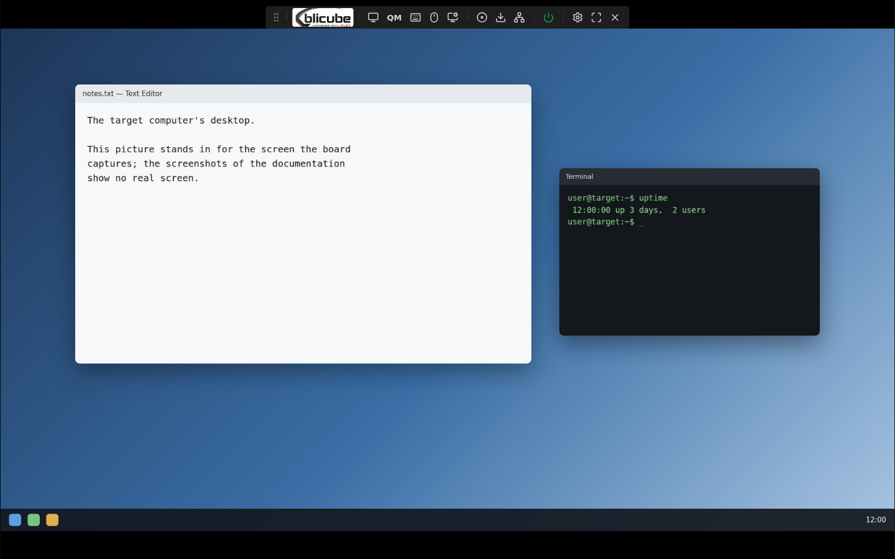
Features
A KVM-over-IP stack that replaces the vendor's KVMD services on the board with sandboxed Rust services and a web interface derived from Hardened NanoKVM.
Remote keyboard and mouse
Absolute and relative mouse, a touch layout for phones with an on-screen keyboard and a row of extra keys. Remote control is taken by the first click, tap or key after a confirmation.
H.264, VP8 and MJPEG video
H.264 encoded by the H616's video engine or by x264, VP8 with libvpx, over WebRTC; or the capture's MJPEG. The encoders work only while someone watches.
QUIC and WebTransport
An optional transport on UDP 443 for the keyboard, the mouse and the H.264 picture, with the bitrate fitted to the narrowest path; a lost session reopens without dropping control.
Sharp upscaling
Where the browser draws with a GPU, a picture shown larger than its size is drawn sharply (deringing and SGSR 1), with a watchdog that turns it off where frames are lost.
Virtual media
Mount an ISO as a CD-ROM or a disk image as USB mass storage, upload images or download them from a URL.
ATX power control
Power and reset buttons of the target computer, short and long press, and Wake-on-LAN.
Windows target agent
An optional agent knows the target's monitors and keyboard layouts, keeps the mouse on the captured monitor, switches layouts, passes clipboard text both ways and locks the session.
Quality monitor
Speed, delay, frames a second, codec and bitrate over the picture, and in its extended level the transport's, the encoder's and the decoder's numbers.
Network and firewall
IPv4, IPv6, DNS, Wi-Fi, TLS, Tailscale, and a firewall with four modes whose changes roll back by themselves unless confirmed.
Signed updates
Signed application slots with health checks and automatic rollback, and signed RAW system updates that keep the board's accounts, keys and settings.
Features off until wanted
Web terminal, scripts, remote ISO download, PicoClaw and RAW updates stay off until switched on; each switch is enforced below the web server.
Phone friendly
The screen as a trackpad, pinch to zoom, the extra keys and the settings on a phone's whole screen.
Screenshots
Anonymized: documentation addresses, made-up names and a drawn stand-in for the target's screen. Every menu and settings page is in docs/screenshots.md.
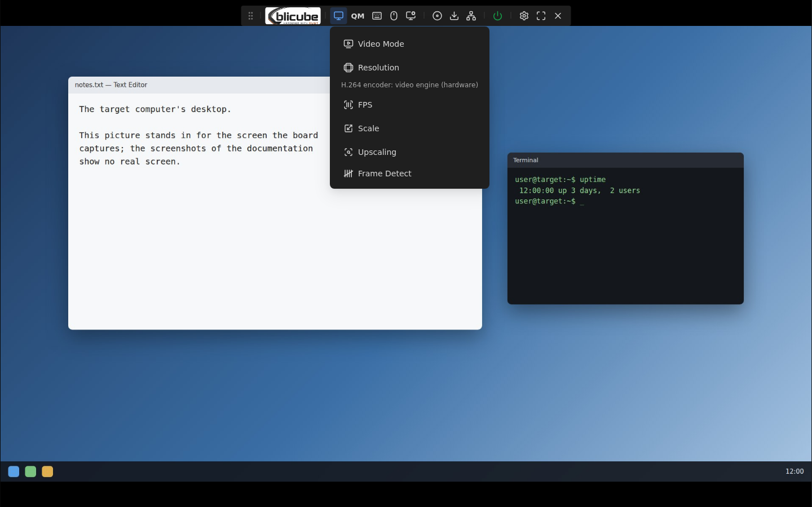
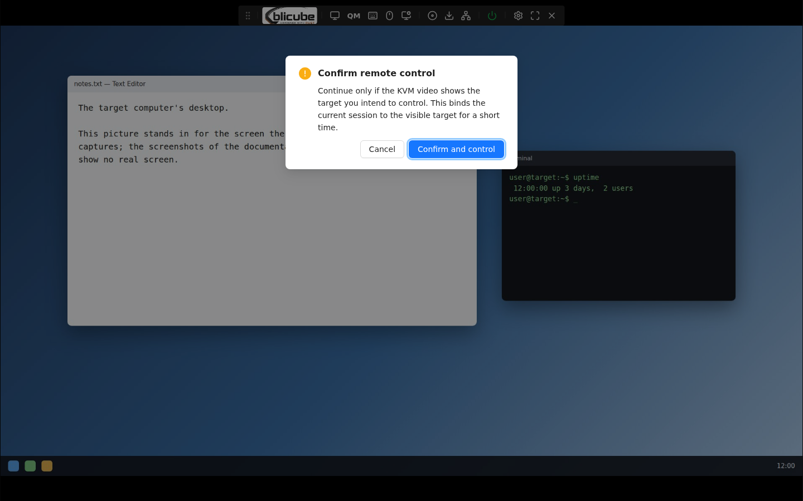
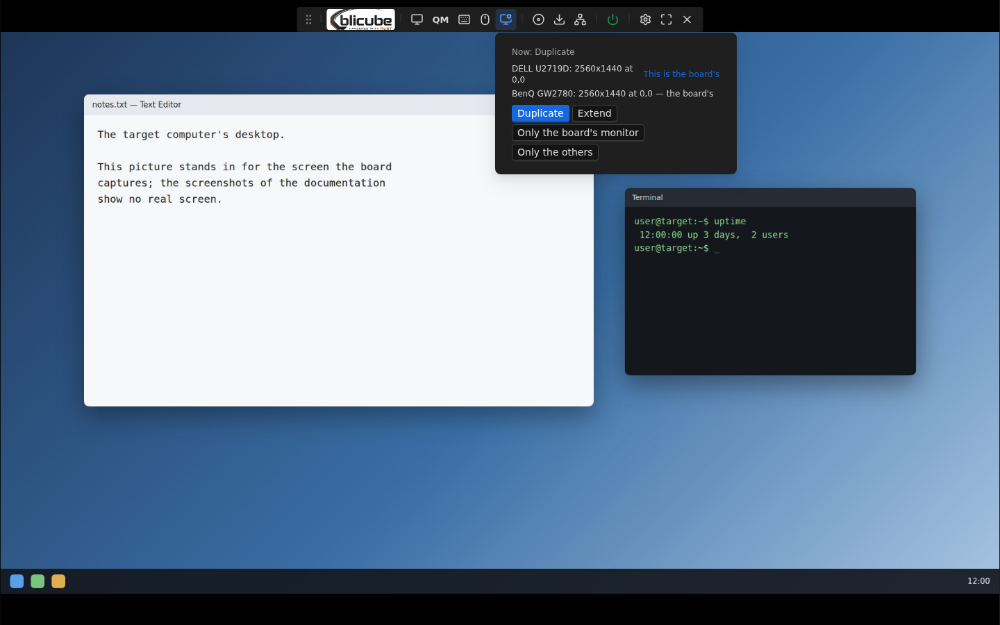
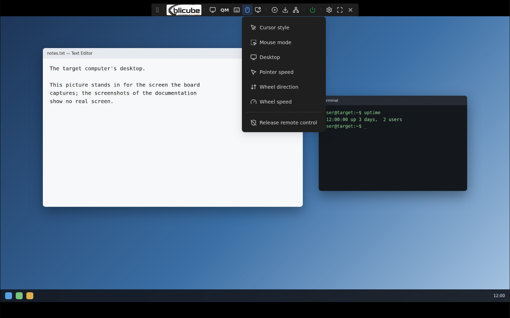
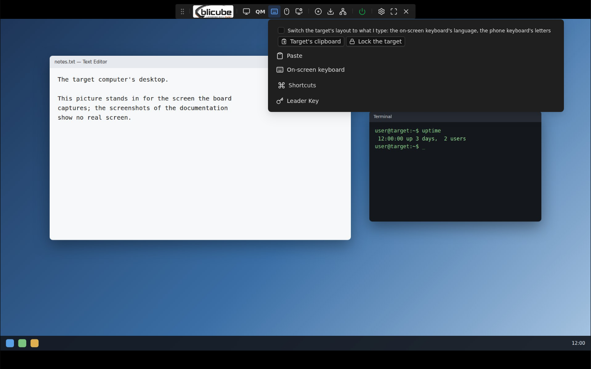
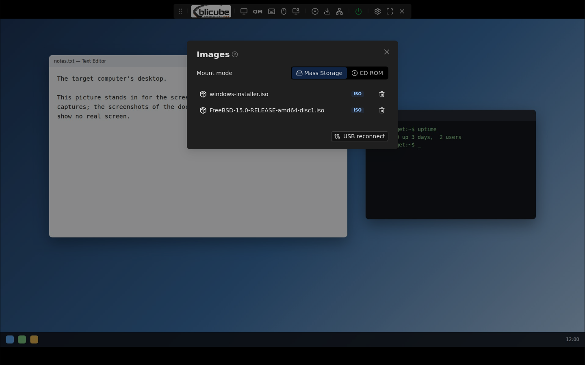
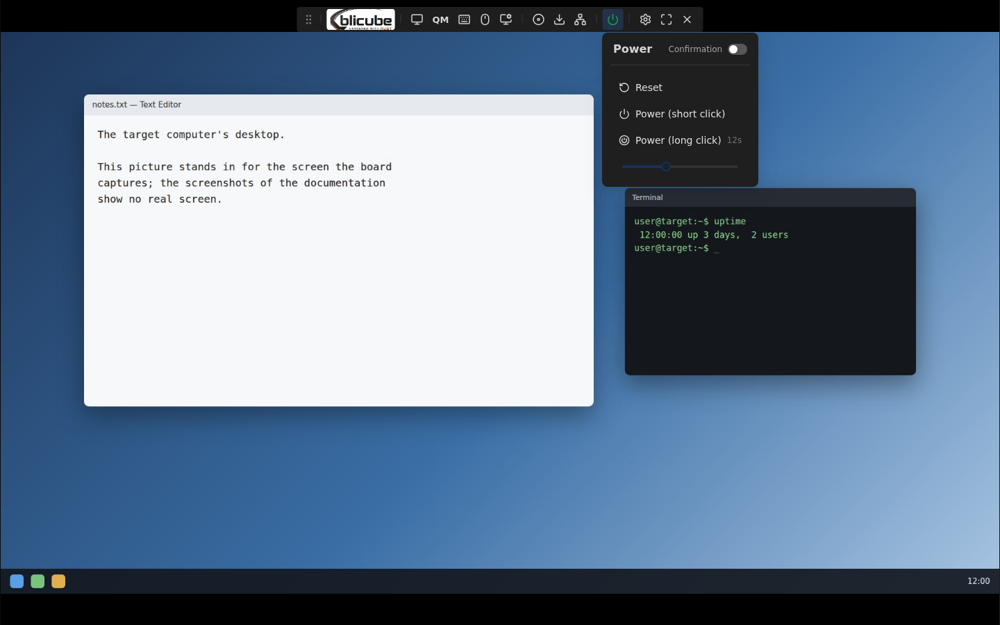
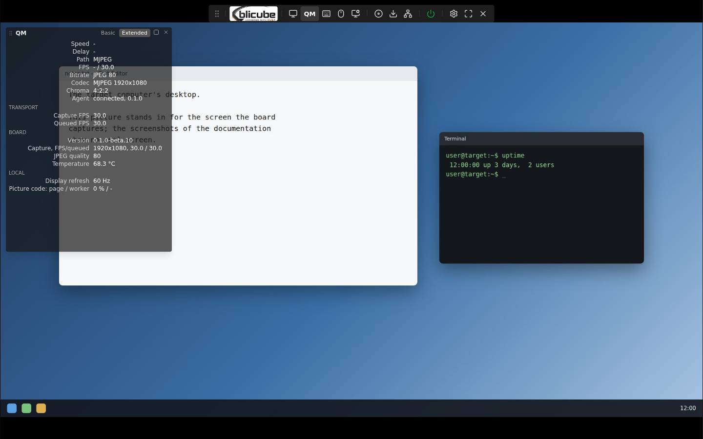
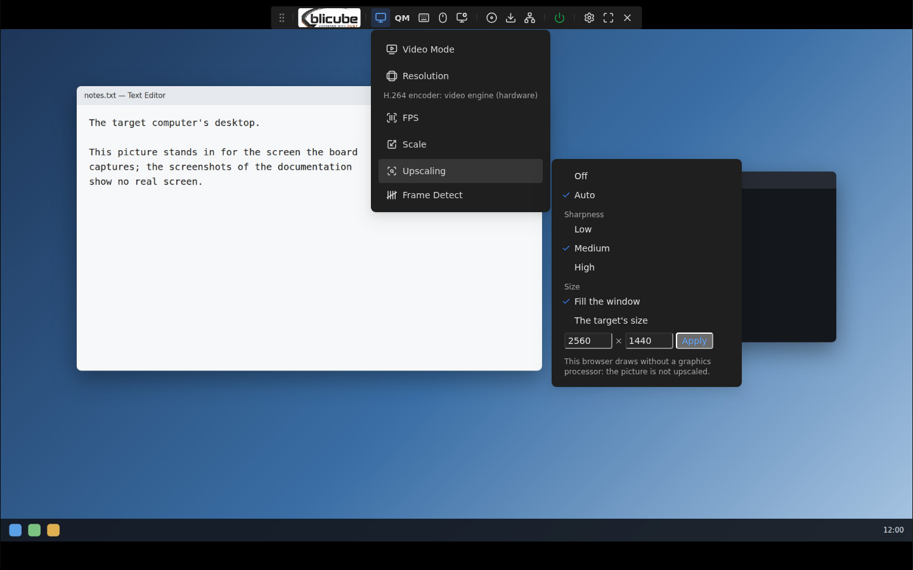
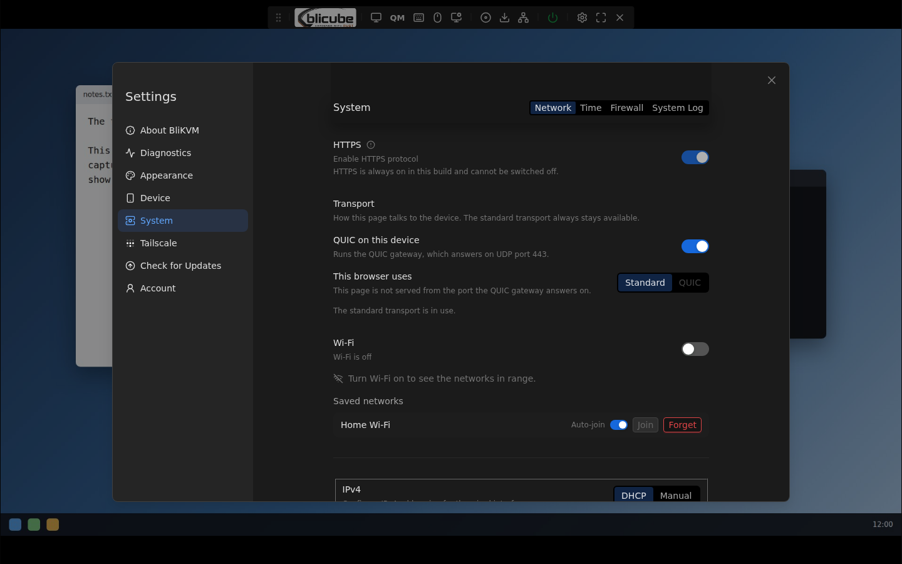
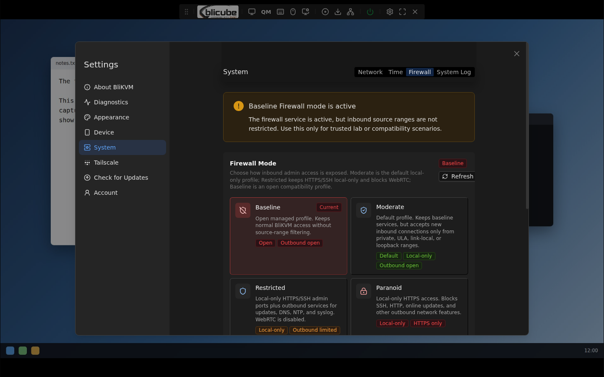
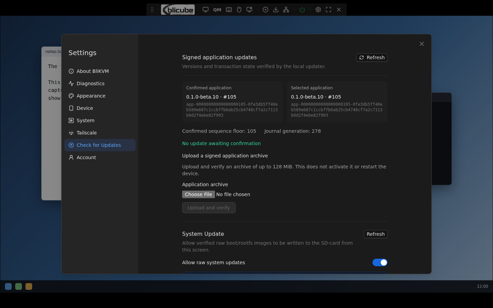
On a phone
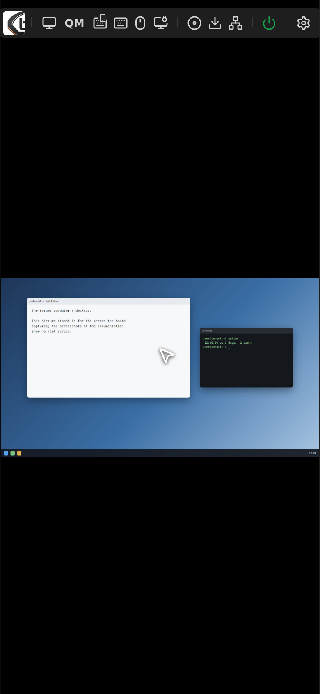
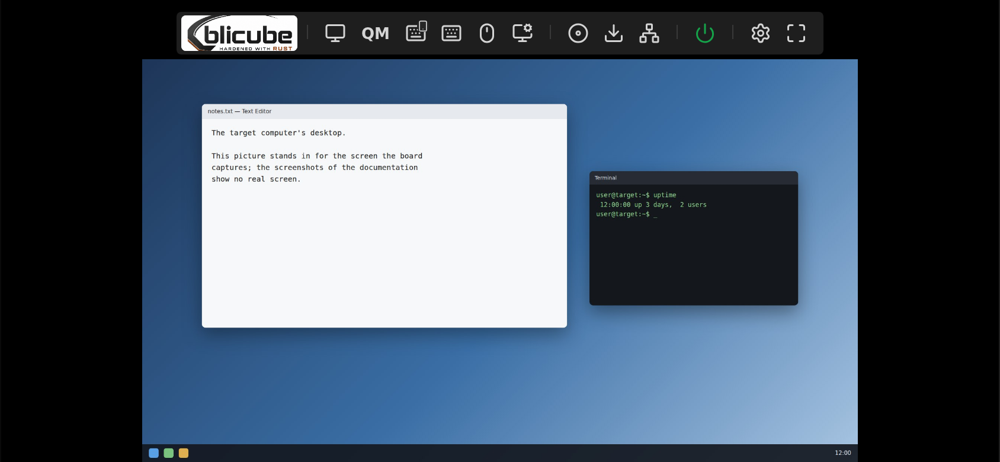
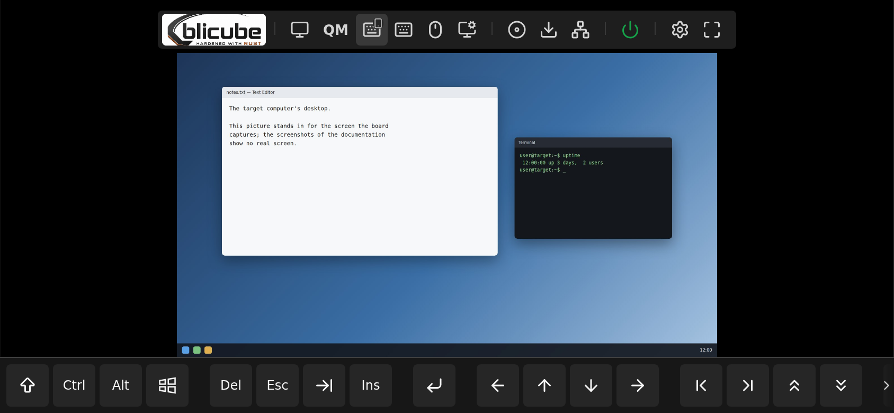
Security model
The vendor's KVMD services are masked; each process below runs as its own systemd unit with a sandbox and only the rights it needs.
| Process | Runs as | What it does |
|---|---|---|
| nginx | root, workers as www-data | TLS on TCP 443 in front of the web server, reached through a Unix socket that serves nginx alone |
bli-kvm-server | its own user, from the active signed slot | login, sessions, the API and its policy, the web interface, WebRTC signalling; no device access of its own |
| board owner | root | the USB gadget, the ATX lines, network and firewall changes, the feature switches; it takes only fixed, typed requests |
| video encoders, Janus | dynamic users | H.264 and VP8 while someone watches; WebRTC media only |
| QUIC gateway | its own user | QUIC and TLS on UDP 443 while its switch is on; it holds no authority of its own |
| update supervisor | its own user | verifies, stages and activates signed slots, checks their health and rolls back |
The design notes, the audits and what was shown on the test board are in the repository: docs/design, docs/baselines and docs/security-boundaries.md.
Install on a BliKVM v4
The image needs a microSD card of at least 32 GB. Check the download against SHA256SUMS from the release first.
- Write the card. Linux or macOS:
Windows: unpack withzstd -dc hardened-blikvm-h616-sd.img.zst | sudo dd of=/dev/sdX bs=4M conv=fsync status=progresszstd -d, then write the.imgwith balenaEtcher or Rufus. - Insert the card, connect Ethernet and power the board. The first boot creates the board's own SSH host keys, TLS certificate and identifiers; it takes about a minute.
- Open
https://<board address>/and create the administrator account in First Setup, on a trusted network. The password you choose also becomes root's password for SSH.
A board that already runs Hardened BliKVM is updated from Settings > Update with the signed application bundle and the signed RAW system update of the release; the release notes say how.
FAQ
Which hardware does it run on?
The BliKVM v4 with the Allwinner H616. Everything was verified on one board.
Is it a PiKVM or NanoKVM alternative?
It is an IP-KVM firmware for the BliKVM v4 hardware, with a web interface derived from Hardened NanoKVM. It is not affiliated with BliKVM, PiKVM or Sipeed.
Which browsers work?
It was tried with Chrome, Edge and Firefox on a desktop and Chrome on Android. QUIC needs WebTransport; where a browser has none, the standard transport (HTTPS, WebSocket, WebRTC) is used.
Is it finished?
It is a beta. Each release lists what was checked and its known limitations; report what you find in the issues.
What licence?
GPL-3.0-only. Third-party components keep their own licences, listed in the repository.